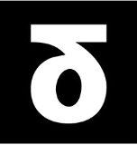

STANDX BUILDER MUSEUM
Devasa bir StandX makinesi. DUSD girer, perps işler, likidite durur, kasalar test edilir, trader ve community çıkar. Parçaya dokun — o katmanın gerçek mantığını gör. Her iddia public data ve docs ile doğrulanır.